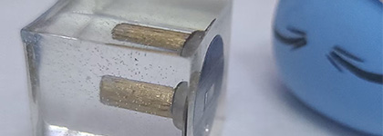
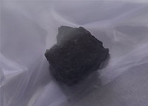
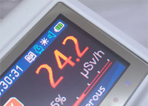
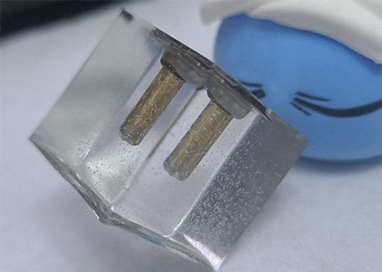
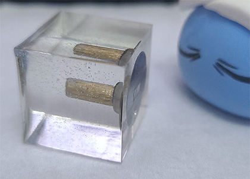
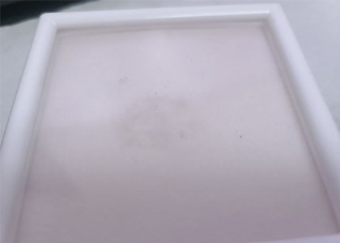

一些辐射来源
Author: Xiao Yi Category: Radiation, Source 这是我精心收藏的一块沥青铀矿（见下图）同时我也在寻找它的下一任主人
不同于Autunite,它在紫外线下它没有荧光.黑的非常纯净.
|  |  |
它正面的gamma剂量高达24.2μSv/h（已补偿±5%）
在矿物中，给定样本的活度取决于放射性核素含量的百分比、其类型（铀或钍）以及样本的大小。在铀矿石中，大部分排放物来自铀及其衰变产物的低能伽玛和贝塔辐射。对于较小的样本，当一起测量时（alpha + beta + gamma 或仅 beta + gamma）会导致高读数，然后单独测量 gamma 时读数会显着下降。这是因为一起测量时通常是没有补偿措施，如把传感器直接对着被测物，这也导致了不准确，这块矿石如果舍去补偿措施直接测量的话剂量率将高达500μSv/h.
使用环氧树脂封的一个Am-241,顶部遮挡也没有很厚同时又屏蔽了alpha射线,这样就成了一个小光子源,活度1μCi.
图片因为拍摄角度原因可能看着会有点晕.我很抱歉.
这是一个沾染来源,具体是什么核素需要能谱分析,我现在暂时没有这种设备；根据测试应该是电子发射体,当成一个低活度的电子源还不错.
图片中心可以看到有一些"污渍" 核素就在那里.
 0 Comments | Continue reading...